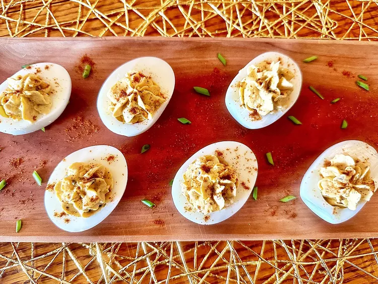

Sriracha Deviled Eggs
Description
These deviled eggs are taken up a notch with Sriracha, which really enhances the flavor. This recipe serves 2, but it can easily be doubled.
Ingredients
- 3 large eggs, hard boiled, peeled
- 2 tablespoons mayonnaise
- 1 teaspoon Sriracha, or to taste
- ½ teaspoon mustard
- salt and freshly ground black pepper to taste
- ¼ teaspoon paprika
Steps
- Slice eggs in half lengthwise, remove yolks, and place them in a mixing bowl. Set egg whites aside.
- Mash the egg yolks. Add mayonnaise, sriracha, and mustard. Mix until well combined. Season with salt and pepper.
- Place egg yolk mixture in a piping bag and pipe mixture into egg whites. Sprinkle with paprika.